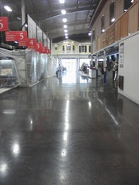

Diamond Polished Concrete
Diamond polished floors produce a gloss that is unsurpassed by any other concrete floor finish. They are also stain resistant, remarkably easy to maintain, sanitary, and slip resistant. These floors are not only practical, but can also be a beautiful addition to any structure. Through the use of concrete stains and dyes for endless color options, as well as engraving, stenciling, scoring and cutting for patterns; polished concrete floors can be the stunning focal point of any business establishment. With a life cycle of more than 20 years and unlimited design options, polished floors are extremely cost-effective, while delivering a high-end, high-priced look.
With a life cycle of more than 20 years and unlimited design options, polished floors are extremely cost-effective, while delivering a high-end, high-priced look.
Our Process
InVision's process turns bare concrete into a beautiful, marble-like, abrasion resistant, water repellant, dustproof surface, which is easy and economical to maintain. We use special heavy duty planetary machines with diamond impregnated disks, which progressively grind the concrete surface down in millimeters to produce as smooth a surface as possible. We begin by making several passes to achieve a smooth, even floor. Then we apply a densifier, which provides additional compression strength and abrasion and stain resistance. Next, using an increasingly finer grit pad, we polish until we reach our customer’s desired level of shine:
Level 1: This level corrects problems in the original concrete installation, including concrete buildup, cracks and minor imperfections. The result is a floor that is easier to clean and has a matte finish or low gloss.
Level 2 This level is best suited for automotive shops, warehouses and factories. The result is a floor that is clean, attractive, durable and cost efficient.
Level 3: This level delivers the “Wow Factor” and is best suited for any establishment where you want to impress your customers and leave a lasting impression, such as retail stores, showrooms, supermarket and grocery chains.
Level 3 is also an excellent option for health care facilities, pharmaceutical facilities, and data centers because it is aesthetically pleasing, as well as sanitary.
To see our gallery of Diamond Polished Concrete pictures, just click here.